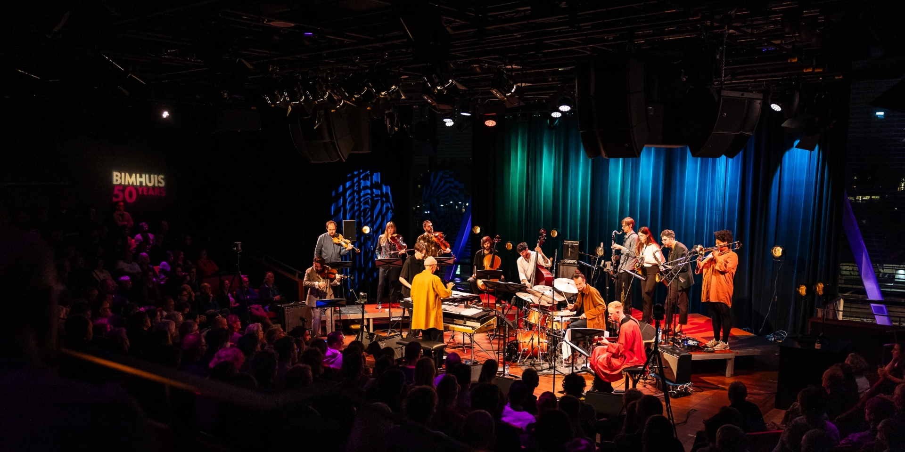
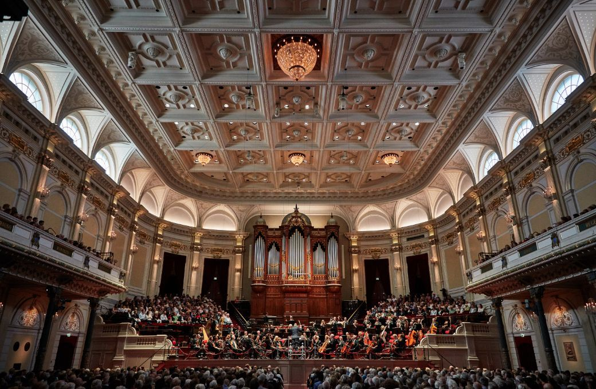
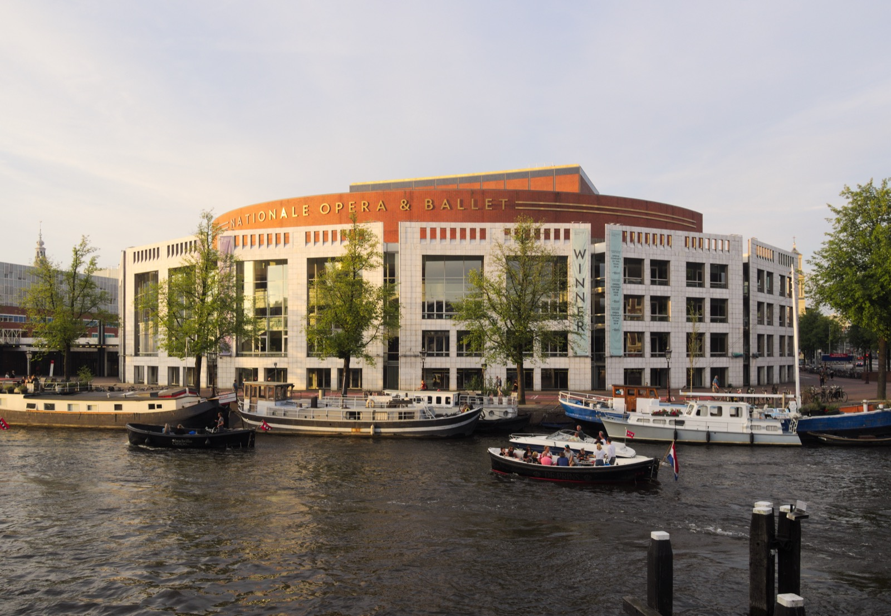
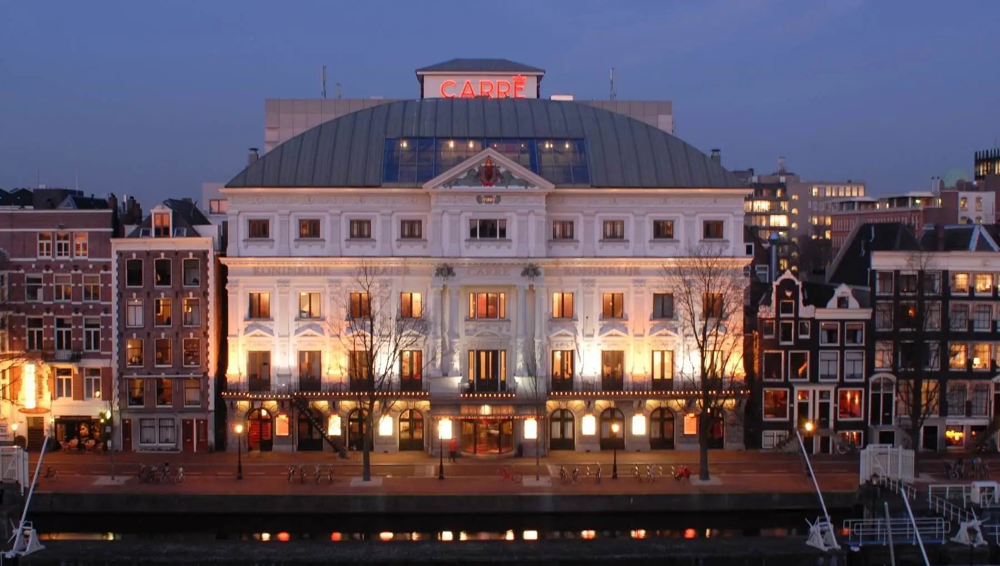
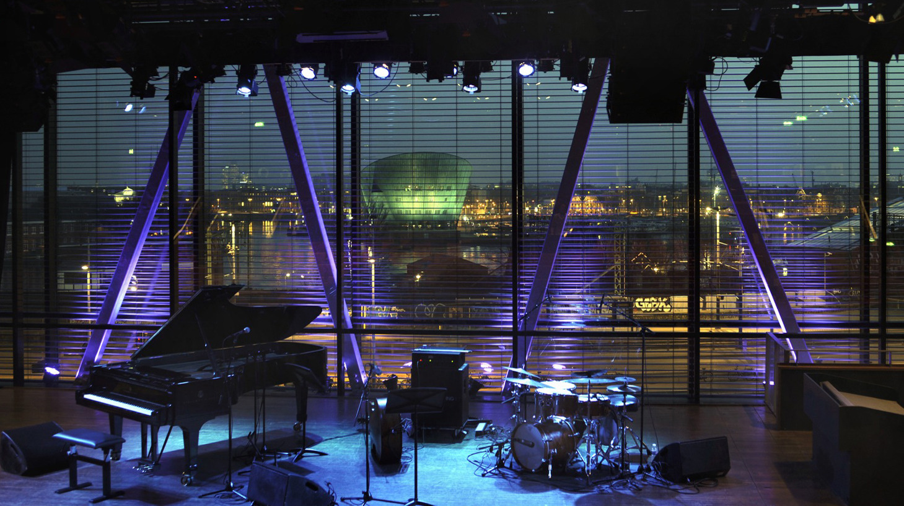

A major Harry Styles residency, Mozart at the National Opera, Emmylou Harris in the Concertgebouw, and free lunchtime concerts five minutes from the apartment.

Consistently ranked one of the three best concert halls in the world for acoustic quality. Worth going to at least once regardless of program; the building itself is extraordinary.
Free Wednesday lunchtime concerts (May 27, ~12:30 in the Recital Hall) are a 30-minute program, usually chamber music. Free to attend; collect free tickets at the door, max 2 per person, €2.50 transaction fee. Arrive 20 minutes early. Program posted one week before at concertgebouw.nl.
Emmylou Harris and Jim Lauderdale at the Concertgebouw, a rare country/Americana show in this classical hall. Around €60/ticket. If you're booking one thing, this is it for Scott and the musicians in the family. Check concertgebouw.nl now.
Bach Choir and Orchestra of the Netherlands. May 22: Mozart Eine Kleine Nachtmusik & Requiem. May 23 (last tickets): Vivaldi The Four Seasons. Both in the Grote Zaal, ~€60/person.

A brand-new production of Mozart's Le nozze di Figaro directed by Kirill Serebrennikov. Netherlands Chamber Orchestra in the pit under Francesco Corti. Rising stars Olga Kulchynska and Emily Pogorelc in the cast. Three performances during your window.
The opera house is literally around the corner from your apartment. This is the kind of thing you'd fly to Amsterdam for on its own. Worth booking at least one of the three dates.

Nick Mulvey — May 23. British singer-songwriter, introspective folk-pop. Good seated-concert option for the same evening as the Vivaldi at Concertgebouw.
Kovacs — May 24. Dutch dark-pop singer, cinematic and emotional. Beautiful voice. Check out a track before deciding.
Amsterdam has a serious jazz scene and a handful of excellent smaller venues.

Aaron Parks Little Big — May 23 at 20:30. €24–29. Aaron Parks is one of the best young jazz pianists working; this is a serious show for Scott especially.
Free Tuesday jam sessions at 22:00 in the café. May 26; no ticket, just show up. The Bimhuis also programs additional acts through April and May, so check bimhuis.nl closer to the trip.
Rare reunion of the gothic country/alt-rock band. Paradiso is one of Amsterdam's legendary rock venues, in a converted church near Leidseplein. If any member of the family knows this band, this is a once-in-a-decade show.
Five minutes from the apartment. The 2026 season starts around the Whitsun weekend (May 24–25) with free performances through September. Typical schedule: Fridays dance, Saturdays family/kids shows, Sundays music. Program posts in April at openluchttheater.nl. Bring a picnic blanket.
Amsterdamse Bos. Food trucks, cooking demos, disco bingo, and a dessert Ferris wheel. Sunday May 24 is the designated Family Day: face painting, children's disco, kids' cooking workshops. Go early, leave before it gets crowded. Free or low entry.
Every confirmed show during your window, across all venues.
| Date | Artist / Event | Venue | Genre | Notes |
|---|---|---|---|---|
| Fri May 22 | Harry Styles + Robyn | Johan Cruijff ArenA | Pop | 19:30 |
| Fri May 22 | Mozart: Requiem & Eine Kleine | Concertgebouw | Classical | ~€60 |
| Fri May 22 | Gipsy Kings | AFAS Live | Flamenco | Verify date at afaslive.nl |
| Sat May 23 | Harry Styles + Robyn | Johan Cruijff ArenA | Pop | 19:30 |
| Sat May 23 | Vivaldi: The Four Seasons | Concertgebouw | Classical | Last tickets, ~€60 |
| Sat May 23 | Nick Mulvey | Carré Theatre | Folk/singer-songwriter | 2 min walk |
| Sat May 23 | Aaron Parks Little Big | Bimhuis | Jazz | 20:30, €24–29 |
| Sat May 23 | Le nozze di Figaro (Mozart) | Dutch National Opera | Opera | New production, 2 min walk |
| Sun May 24 | Emmylou Harris / Jim Lauderdale | Concertgebouw | Americana | ~€60 — book now |
| Sun May 24 | Kovacs | Carré Theatre | Dark pop | 2 min walk |
| Sun May 24 | DiscoDip Family Day | Amsterdamse Bos | Festival | Kids' disco, food trucks |
| Mon May 25 | Le nozze di Figaro | Dutch National Opera | Opera | Whit Monday matinee |
| Tue May 26 | Harry Styles + Robyn | Johan Cruijff ArenA | Pop | 19:30 |
| Wed May 27 | Free Lunchtime Concert | Concertgebouw (Recital Hall) | Chamber | ~12:30, FREE, arrive early |
| Wed May 27 | 16 Horsepower (reunion) | Paradiso | Gothic country | Rare |
| Wed–Thu May 27–28 | Goose (USA) Nights 1–2 | Melkweg | Jam band | |
| Thu May 28 | Le nozze di Figaro (final) | Dutch National Opera | Opera | Final performance of run |
| Fri May 29 | Harry Styles + Robyn | Johan Cruijff ArenA | Pop | Added date |
| Fri May 29 | Zucchero — Overdose d'amore GOLD | Ziggo Dome | Italian rock/blues | €50–73 |
| Sat May 30 | Harry Styles + Robyn | Johan Cruijff ArenA | Pop | Added date |
| Sat May 30 | TWICE — Night 1 | Ziggo Dome | K-pop | Netherlands debut |
| Sat May 30 | Morgan Heritage | Paradiso | Reggae | |
| Sun May 31 | TWICE — Night 2 | Ziggo Dome | K-pop | |
| Mon Jun 1 | Blue October | Paradiso | Alternative rock |
Additional shows at Paradiso, Melkweg, Bimhuis, and Tolhuistuin will be announced through April–May. Check venue websites closer to the trip.